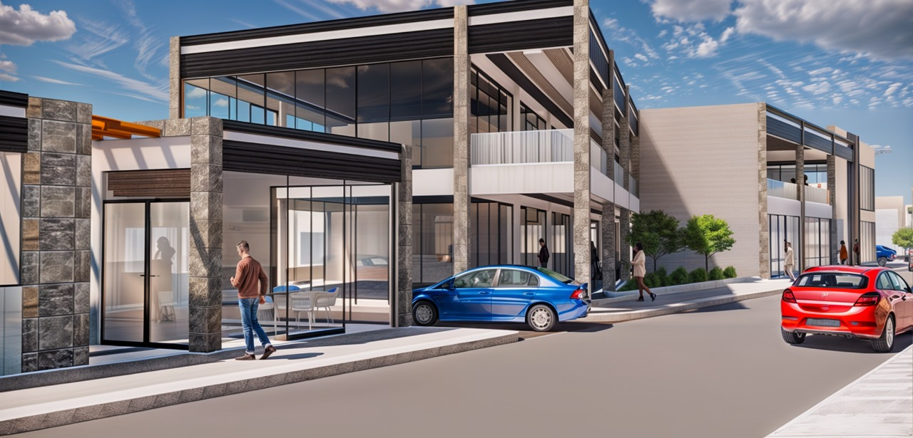
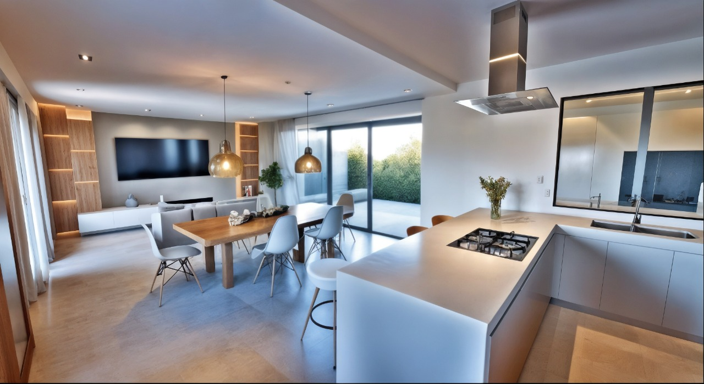
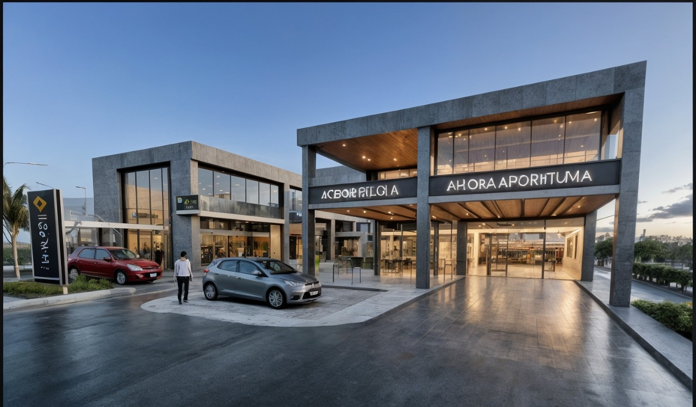
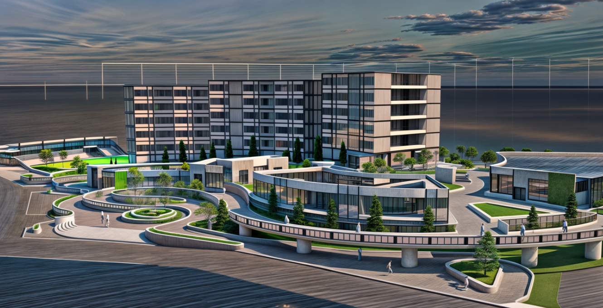
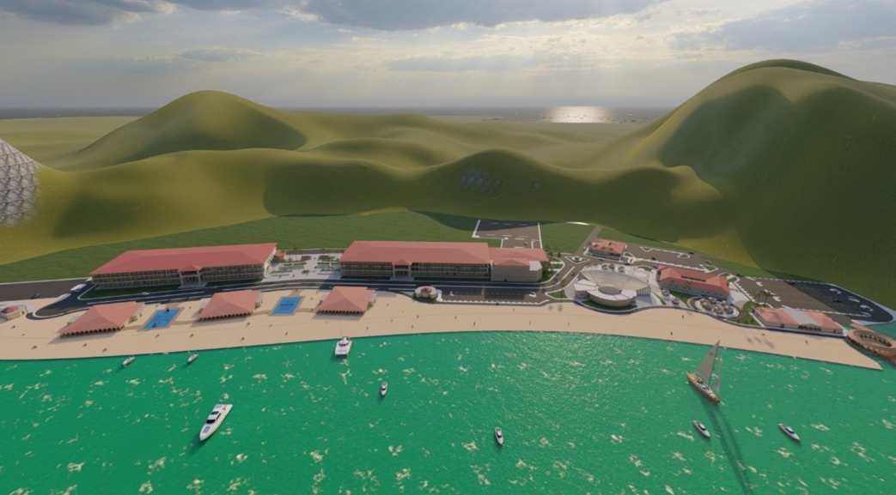

Despacho de Arquitectura · Tegucigalpa, Honduras
Espacios que trascienden el tiempo
Diseño arquitectónico, construcción y planificación urbana con un enfoque que combina rigor técnico, sensibilidad estética y compromiso con el entorno.

Introducción
¿Qué es un despacho de arquitectura?
Un despacho de arquitectura es un equipo de arquitectos y especialistas que acompaña a personas, empresas e instituciones en todo el camino de un proyecto: desde la primera idea hasta el espacio terminado.
Su trabajo va más allá de dibujar planos. Escucha las necesidades del cliente, estudia el terreno y su contexto, diseña soluciones funcionales y estéticas, resuelve la parte técnica y normativa, y vigila que lo construido sea fiel a lo diseñado, dentro del presupuesto y los plazos acordados.


Desde 2025Quiénes somos
Arquitectura con propósito
Taruma Arquitectos es un despacho especializado en diseño arquitectónico, planeación y desarrollo de proyectos integrales. Nuestro compromiso es ofrecer soluciones innovadoras, eficientes y sostenibles, garantizando la calidad en cada obra que realizamos.
-
01
Misión
Diseñar espacios innovadores, funcionales y sostenibles que respondan de manera integral a las necesidades de nuestros clientes, elevando su calidad de vida y generando un impacto positivo en el entorno.
-
02
Visión
Ser un referente en arquitectura, transformando ideas en espacios innovadores, funcionales y sostenibles, con impacto positivo en la sociedad y el medio ambiente.
Lo que ofrecemos
Nuestros servicios
Acompañamos cada proyecto de forma integral: diseñamos, gestionamos y construimos para que una idea llegue a ser un espacio real.
Gestión de Proyectos
Planeación y Urbanismo
Interiorismo y Remodelación
Consultorías y Asesorías
Construcción y Ejecución
Cómo trabajamos
Nuestros procesos
Desarrollamos cada proyecto con un enfoque integral que une análisis, diseño y gestión. Nuestro portafolio resume las etapas esenciales del proceso arquitectónico, garantizando soluciones funcionales y estéticas, alineadas a las necesidades de cada cliente.
-
01
Análisis
Entender las necesidades del cliente, el terreno y su contexto.
-
02
Diseño
Convertir las ideas en propuestas, planos y modelos del proyecto.
-
03
Gestión
Coordinar normativa, permisos, presupuesto y plazos.
-
04
Ejecución
Acompañar la obra hasta entregar un espacio listo para vivirse.
Proyectos destacados
Nuestro portafolio


Nuestra filosofía
“La arquitectura no es solo construir edificios. Es crear experiencias, forjar identidades y dejar una huella que perdure en el tiempo y en las personas.”— Taruma Arquitectos
¿Tiene un proyecto en mente?
Cuéntenos su idea y la haremos realidad juntos.
Solicitar cotización